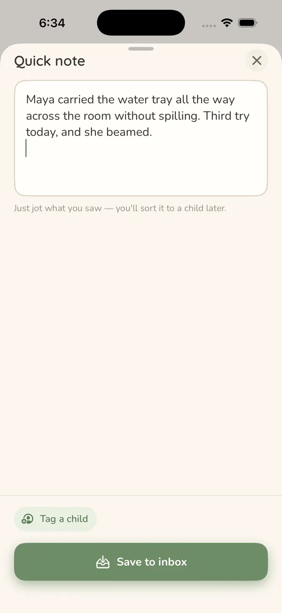
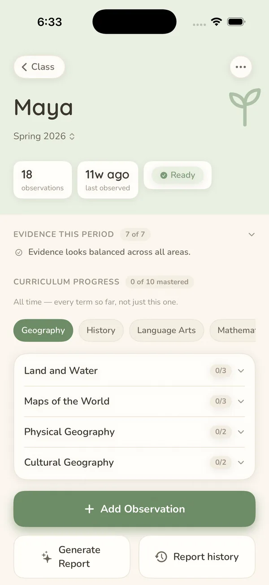
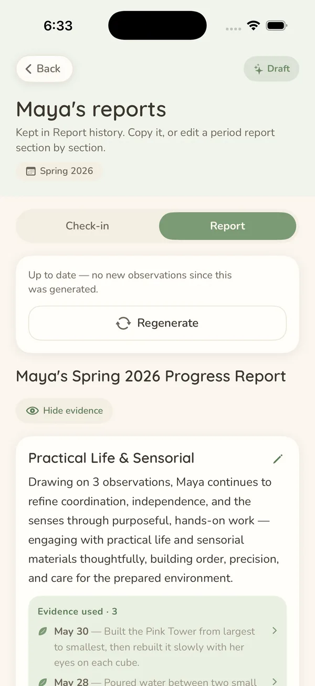

Ten seconds, not ten taps
No picking a student, then a lesson, then a category before you can write a word. Capture first, sort it out at cleanup — the app keeps the week’s captures queued, grouped by the day you took them.
MonteSprout is a calm iOS app for Montessori guides. Catch what you noticed while it’s fresh — a line, a photo, a voice note — and at report time a term of your own observations becomes a draft you edit and send.
Get in touchAn observation workspace for the teacher, not an administration system for the school. It sits beside whatever your school already runs, and it earns its place in one moment: the one where a child does something worth remembering and your hands are full.
Built for one classroom to start using on its own — no school code, no procurement, no account to create.
A child finally carries the tray without spilling. You have about four seconds before the room needs you again.
Type a line, take a photo, or say it out loud. You don’t even have to say which child — that is cleanup’s job, and it comes back to you as a suggestion to confirm.
At report time, a term of your own notes becomes a draft with the evidence attached — yours to rewrite, approve and send.
No picking a student, then a lesson, then a category before you can write a word. Capture first, sort it out at cleanup — the app keeps the week’s captures queued, grouped by the day you took them.
Start a note now and finish it after lunch. Closing the sheet saves it rather than losing it — there is no way to discard a capture by accident. Works with no signal at all.
Every draft is assembled from notes you actually wrote, each claim showing the observation behind it. An AI service does the writing — with the child’s name swapped for a stand-in first, and only after it asks you. Exactly what gets sent.
Your classroom syncs through your own iCloud account rather than a school server, and there is no MonteSprout account to make. Invite a co-teacher to a classroom when you want one.
No points, no streaks to lose, no daily quota of photos to post. Documentation should support observation, not compete with it.



Real screens, with the sample classroom the app ships for trying it out — no child’s actual record.
MonteSprout is in private beta with Montessori guides now. Say hello if you’d like to hear when it opens up — or just to tell us what your classroom actually needs.
support@mangogrovelabs.com